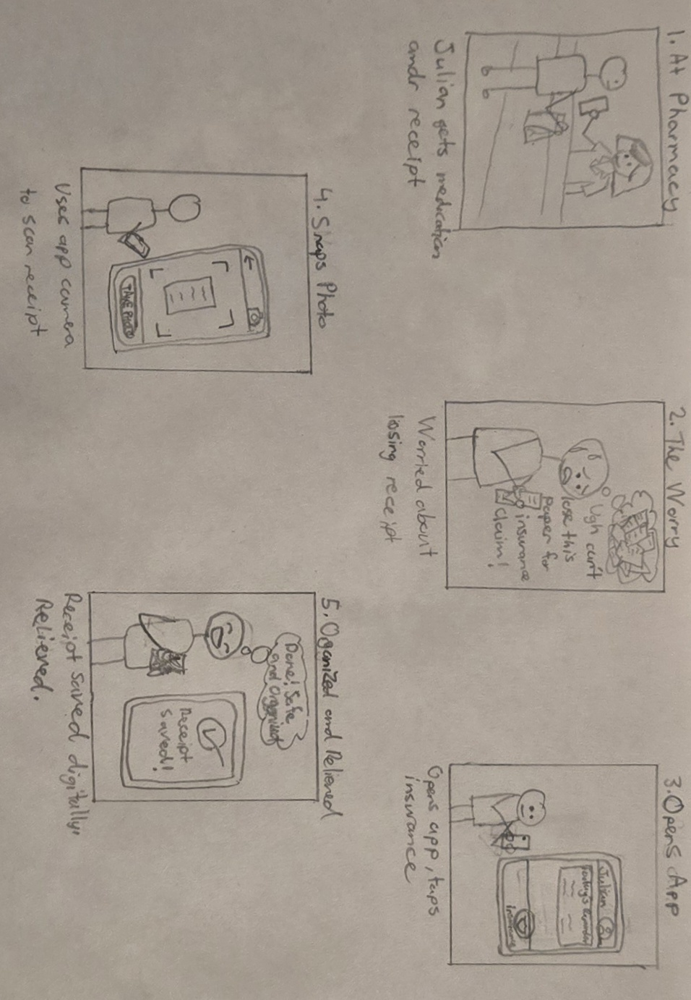
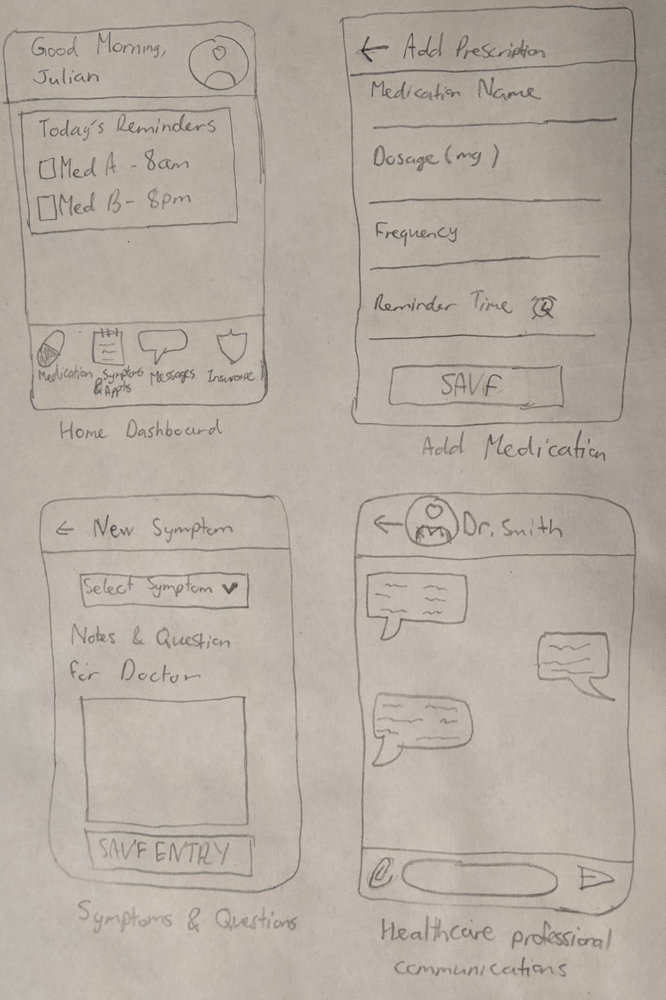
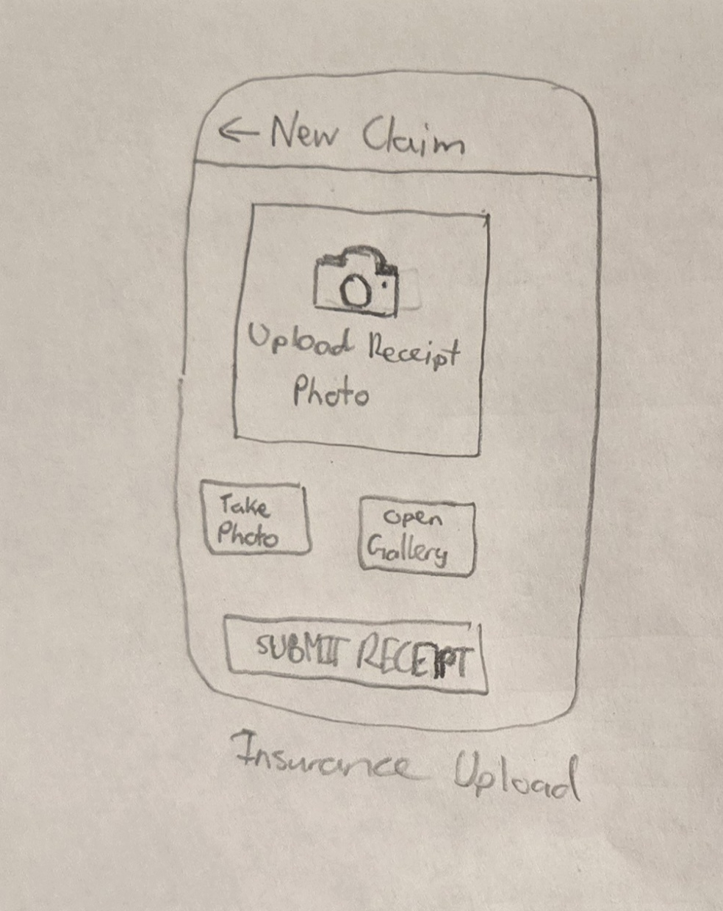
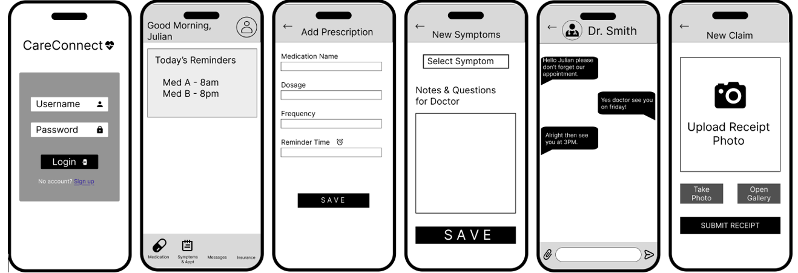

CareConnect - SOEN 357 Mini Project
Interactive High-Fidelity Prototype
Interact with the CareConnect app below.
1. Product Research & Methodology
[cite_start]To better understand the needs and challenges of potential users, we also conducted some secondary research by looking at existing solutions and public user feedback. [cite: 2]
-
[cite_start]
- Competitive Analysis: We reviewed user comments on popular medication tracking apps such as Medisafe and MyTherapy on the App Store and Google Play. [cite: 3] [cite_start]This helped us identify common issues reported by users, such as cluttered interfaces, reminder schedules that are hard to adjust for different routines (like weekends), and alarms that can feel too disruptive. [cite: 4] [cite_start]
- Public Forums: We also looked at discussions on public patient support forums and university student community boards. [cite: 5] [cite_start]These discussions highlighted some everyday challenges, such as keeping track of pharmacy receipts for campus insurance claims and remembering symptoms or questions to bring up during short medical appointments. [cite: 6]
2. Data Analysis: User Personas & User Stories
[cite_start]Based on our research, we created user personas and related user stories to guide our design decisions. [cite: 8]
Persona 1: The Busy Student
-
[cite_start]
- Name: Julian (21) [cite: 10] [cite_start]
- Background: Third-year software engineering student who manages ADHD and mild asthma. [cite: 10] [cite_start]
- Goals & Motivations: Julian wants to avoid missing his daily medication so he can keep up with his course load, especially during stressful periods like project deadlines. [cite: 11] [cite_start]
- Pain Points: He often forgets to request prescription refills and finds it inconvenient to keep track of physical pharmacy receipts for his university Studentcare insurance claims. [cite: 12]
- User Stories:
-
[cite_start]
- As a busy engineering student, I want to receive medication reminders so that I do not miss a dose during study sessions. [cite: 13] [cite_start]
- As a student on a budget, I want to store digital copies of my pharmacy receipts so that I can easily submit my insurance claims. [cite: 14]
Persona 2: The Multi-Tasking Patient
-
[cite_start]
- Name: Elena (58) [cite: 16] [cite_start]
- Background: High school teacher who manages Type 2 Diabetes and hypertension. [cite: 16] [cite_start]
- Goals & Motivations: She wants to manage multiple prescriptions (some with food, some on an empty stomach) so she can maintain stable blood sugar levels and stay healthy. [cite: 17] [cite_start]
- Pain Points: Elena sometimes feels overwhelmed by cluttered app interfaces and often forgets the questions she wants to ask her doctor during short medical appointments. [cite: 18]
- User Stories:
-
[cite_start]
- As a patient managing multiple conditions, I want to track my medication schedule easily so that I can maintain stable blood sugar levels. [cite: 20] [cite_start]
- As a patient, I want to keep notes about my symptoms so that I can communicate effectively with my healthcare professionals during appointments. [cite: 21]
3. User Journey Mapping
User Journey Map: Julian
 [cite_start]
[cite_start]Scenario: Julian downloads the Health Companion app to set up daily medication reminders and upload a pharmacy receipt for insurance. [cite: 24]
-
[cite_start]
- Phase 1: Discovery & Onboarding - Downloads the app and creates an account. [cite: 26] [cite_start]Opportunity: Keep the sign-up process short to avoid frustration. [cite: 27] [cite_start]
- Phase 2: Setup - Adds medication details and preferred reminder times. [cite: 29] [cite_start]Opportunity: Allow flexible reminder times for different routines. [cite: 30] [cite_start]
- Phase 3: Reminder - Receives a notification reminding him to take his medication and logs the dose. [cite: 32] [cite_start]Opportunity: Make it easy to confirm medication directly from the notification. [cite: 34] [cite_start]
- Phase 4: Ongoing Management - Uploads a photo of his pharmacy receipt for insurance claims. [cite: 36] [cite_start]Opportunity: Simplify the process of uploading and storing receipts. [cite: 38]
User Journey Map: Elena
 [cite_start]
[cite_start]Scenario: Elena experiences a symptom, logs it in the Health Companion app, and later checks these notes during a short appointment with her doctor. [cite: 40]
-
[cite_start]
- Phase 1: Recognizing and Logging a Symptom - Elena feels unusually tired and opens the app to log the symptom. [cite: 42] [cite_start]Opportunity: Make symptom logging quick and easy to access from the home screen. [cite: 44] [cite_start]
- Phase 2: Note-Taking and Preparation - She writes down a few questions for her next appointment. [cite: 46] [cite_start]Opportunity: Use larger text and a simple layout to improve readability. [cite: 48] [cite_start]
- Phase 3: Doctor’s Appointment - Opens the app to read her saved notes and symptoms. [cite: 50] [cite_start]Opportunity: Make notes easy to view quickly during short appointments. [cite: 51] [cite_start]
- Phase 4: Post-Appointment Updates - Updates her medication schedule based on the doctor’s instructions. [cite: 53] [cite_start]Opportunity: Allow users to edit medication schedules without re-entering everything. [cite: 55]
4. Design Process & Ideation
Storyboard
User Flow Chart

Low-Fidelity Sketches & Wireframes
  5. Usability Testing
[cite_start]Goals: The goal of our usability testing is to check whether the app actually solves the main problems we identified in our research, such as confusing interfaces and reminder schedules that are hard to adjust. [cite: 57] [cite_start]We also want to see if the app feels intuitive for both of our target users: busy students and patients managing multiple conditions. [cite: 58]
[cite_start]To evaluate the prototype, participants will complete a few realistic scenarios: [cite: 59]
-
[cite_start]
- Task 1: Set up a new medication reminder with a specific schedule. [cite: 60] [cite_start]This will help us see if the setup process is simple and fast. [cite: 61] [cite_start]
- Task 2: Take a photo and upload a pharmacy receipt for an insurance claim. [cite: 62] [cite_start]This will test how easy it is to store and manage documents. [cite: 63] [cite_start]
- Task 3: Log a symptom (for example, fatigue) and write a short note for a future doctor’s appointment. [cite: 64] [cite_start]This will test how accessible and clear the symptom tracking feature is. [cite: 65]
Feedback Collection: We will use the Think Aloud method, where participants explain what they are thinking while using the prototype. [cite: 66] [cite_start]We will take note of where they hesitate, get confused, or take longer than expected. [cite: 67] [cite_start]At the end, we will ask a few short questions about their overall experience and satisfaction. [cite: 68]
[cite_start]Analysis and Iteration: After testing, we will group feedback into common themes such as navigation problems or unclear buttons. [cite: 69] [cite_start]If several users struggle with the same task (for example, uploading a receipt), we will adjust the layout or simplify the steps and test the updated version again. [cite: 70]
6. Reflection
[cite_start]Understanding User Needs: Going through the UX design process helped us focus on solving real problems instead of just adding features. [cite: 72] [cite_start]Creating personas and user stories made it easier to think about how different types of users would actually use the app in their daily lives. [cite: 73] [cite_start]For example, the receipt upload feature came directly from the student persona’s frustration with managing insurance claims. [cite: 74] [cite_start]The symptom and note-taking feature was inspired by patients who struggle to remember what to say during short doctor appointments. [cite: 75] [cite_start]Overall, the research helped us justify why each feature exists. [cite: 76]
Challenges and Solutions:
-
[cite_start]
- Design Challenge: One of the main challenges was avoiding a cluttered interface. [cite: 78] [cite_start]Since the app includes multiple features (medication tracking, symptoms, receipts, etc.), it was easy for the design to become overwhelming. [cite: 79] [cite_start]
- Solution: To address this, we kept the layout simple and organized the app into clear sections using a bottom navigation bar. [cite: 80] [cite_start]We also tried to limit unnecessary visual elements and use consistent colors and spacing to make the interface feel cleaner and easier to understand. [cite: 81] [cite_start]
- Technical Challenge (Prototyping): It was difficult to simulate how medication reminders would appear without making them feel annoying or disruptive. [cite: 82] [cite_start]So, in the prototype, we experimented with simple animations to make the reminder feel more natural. [cite: 83] [cite_start]This helped us better visualize how the interaction would work before actual development. [cite: 84]